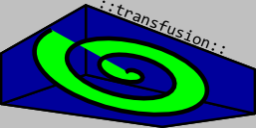

Main Page
0.1

INFORMATION:
Author: Wojtek "afronski" Gawroński
E-mail:
afronski@gmail.com
Start date:
-
Documenting: 02.03.2009
-
Writting: since January 2009
TODO:
- Todo:
- CHANGE: Mesh - setting parameter names, for cg programs - specyfing what is use for rendering (eg. only tex and pos, without colors).
- Todo:
- CHANGE: HWArrayManager: binding, creating, operating, allocate constant size of buff, drawing.
- Todo:
- NEW: Input - keyboard, mouse (RAW_input, not DirectInput).
- Todo:
- NEW: COLLADA loader (UV, Colours, Vertices, Faces, Normals, only model).
- Todo:
- CHANGE: Comments - all to doxygen and english language.
- Todo:
- NEW: HardwareOcclusionQuery: Implementation.
- Todo:
- NEW: Camera - standard, spherical, mouse control.
- Todo:
- NEW: Console (GUI - Edit, TextView + Fonts, simple commands)
- Todo:
- NEW: Heightmap, oraz texture splatting, blending layers.
- Todo:
- CHANGE: Description: Structures, types, specific behaviours, eng. lang.
- Todo:
- THINK: Events: vtables, signals slots or delegates
- Todo:
- CHANGE: FontManager: dynamic vertices, indices, colours, uv's
- Todo:
- NEW: MathLib: Sphere, BBOX, Ray, Plane, collisions (point-bbox, point-sphere, ray-point, plane-point, ray-plane, plane-plane, ray-ray, bbox-bbox, sphere-sphere)
- Todo:
- CHANGE: MathLib: SSE2, kill temporary, do inlining.
CHANGELOG:
-
[ 02.03.2009 - 23:18 ] (transfusion 0.1)
First entry in history file and first version of framework. Have only basic things and poor usability. Long todo and bug list motivate to work. May the code be with you...